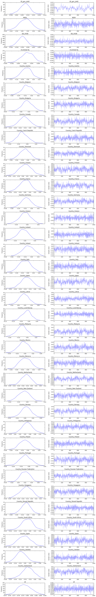

In [12]:
data.Country.unique()
Out[12]:
array(['Australia', 'Austria', 'Belgium', 'Bulgaria', 'Canada',
'Czech Republic', 'Denmark', 'Finland', 'France', 'Germany',
'Greece', 'Iceland', 'Ireland', 'Italy', 'Japan', 'Latvia',
'Luxembourg', 'Malaysia', 'Mexico', 'Morocco', 'Netherlands',
'New Zealand', 'Norway', 'Philippines', 'Poland', 'Portugal',
'Russian Federation', 'Singapore', 'Slovak Republic',
'South Africa', 'Spain', 'Sweden', 'Switzerland'], dtype=object)
In [9]:
%matplotlib inline
from pymc3.models.linear import Glm # from PR #1525
import pandas as pd
data = pd.read_csv('/tmp/testdata.csv').dropna()
class FEPanel(Glm):
def __init__(self, x, y, index, dummy_na=True, intercept=False, labels=None,
priors=None, vars=None, family='normal', name='', model=None):
if not isinstance(x, pd.DataFrame):
raise TypeError('Need Pandas DataFrame for x')
if not isinstance(y, pd.Series):
raise TypeError('Need Pandas Series for y')
if not isinstance(index, (tuple, list)):
index = [index]
x = pd.get_dummies(
x, columns=index, drop_first=not intercept, dummy_na=dummy_na
) # type: pd.DataFrame
is_dummy = lambda s: any(s.startswith('%s_' % l) for l in index)
self.dummies = list(filter(is_dummy, x.columns))
self.not_dummies = list(set(x.columns) - set(self.dummies))
new_priors = dict.fromkeys(
self.dummies, self.default_intercept_prior
)
if priors is None:
priors = dict()
new_priors.update(priors)
super(FEPanel, self).__init__(
x, y, intercept=intercept, labels=labels,
priors=new_priors, vars=vars, family=family, name=name, model=model
)
@classmethod
def from_formula(cls, *args, **kwargs):
raise NotImplementedError('Sorry')
@property
def dummies_vars(self):
return [self[v] for v in self.dummies]
@property
def not_dummies_vars(self):
return [self[v] for v in self.not_dummies]
In [3]:
import pymc3 as pm
In [15]:
with pm.Model() as model:
g = FEPanel(data.iloc[:,1:], data.iloc[:, 0], index=['Country'], dummy_na=False)
#start, step = pm.sampling.init_nuts(n_init=50000, target_accept=0.9)
#pm
trace = pm.sample(1000, n_init=50000, init='advi_map') # extremely slow when NUTS starts sampling
Auto-assigning NUTS sampler...
Initializing NUTS using advi_map...
Optimization terminated successfully.
Current function value: -1571.013995
Iterations: 52
Function evaluations: 77
Gradient evaluations: 77
Average ELBO = 1,437.95: 100%|██████████| 50000/50000 [00:43<00:00, 1155.25it/s]
Finished [100%]: Average ELBO = 1,438.13
100%|██████████| 1000/1000 [00:26<00:00, 37.11it/s]
In [16]:
pm.traceplot(trace);
